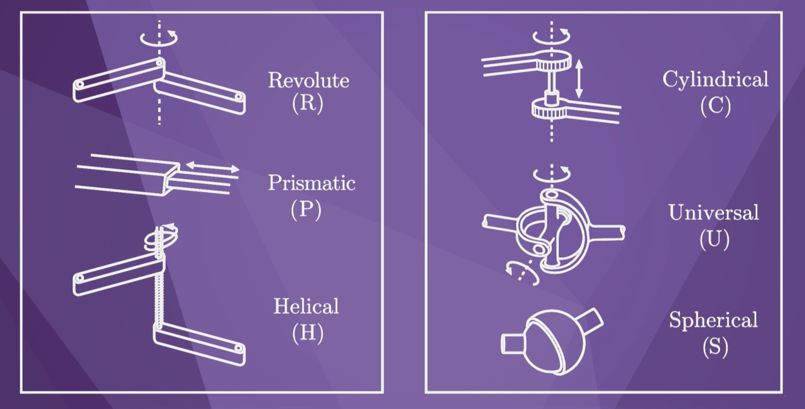
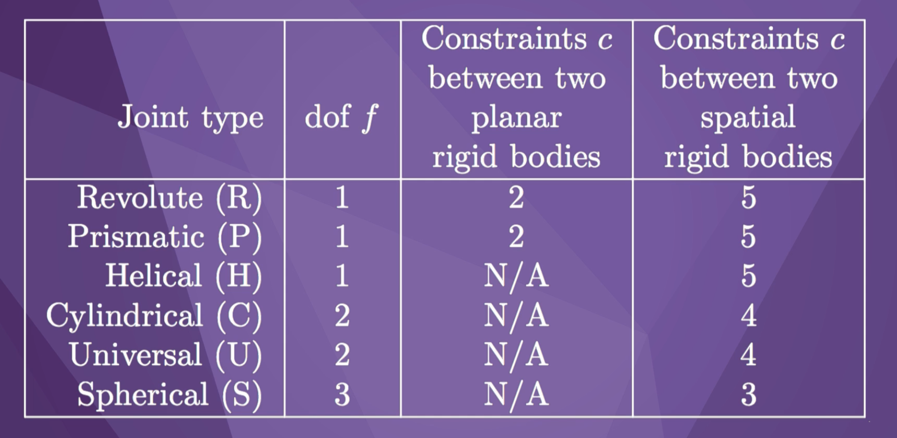
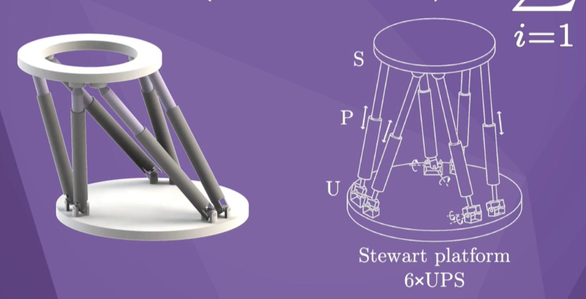
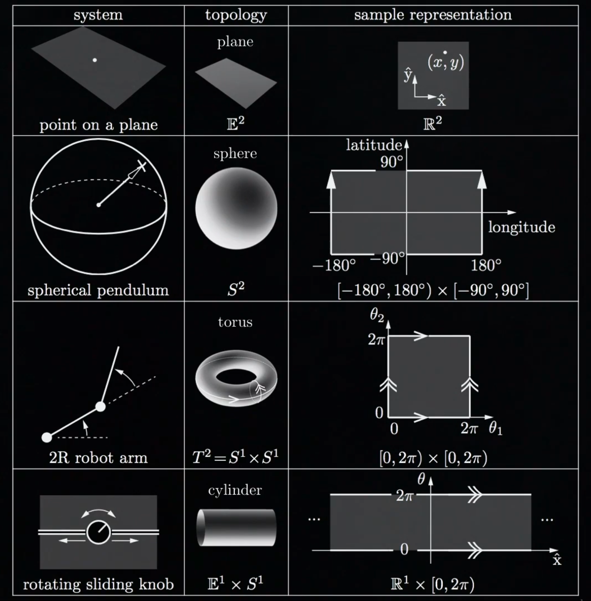
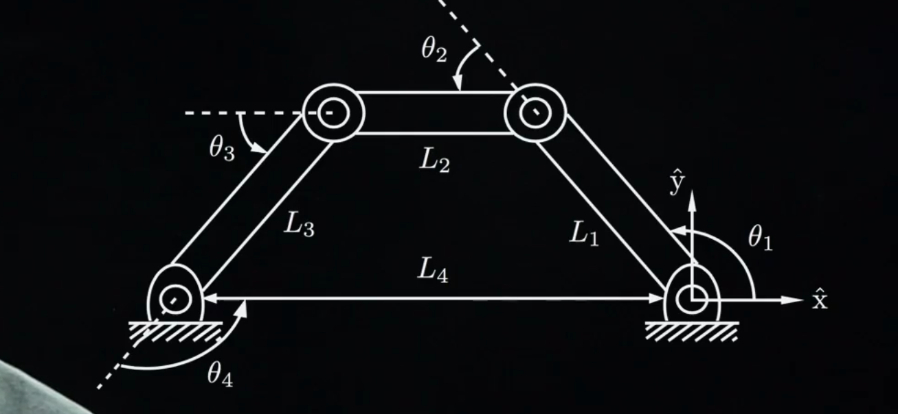

这是美国西北大学 Modern Robotics 课程的个人笔记，主要内容包括机器人运动基础、正向运动学（FK）、逆向运动学（IK）等。
Chapter 2&3: Foundations of Robot Motion
2.1 Degrees of Freedom of a Rigid Body
Configuration: A specification of the position of all points of a robot.
C-space: The space of all configurations.
Degrees of freedom (dof): The dimension of the C-space.
dof=∑(freedoms of points)−# of independent constraints
dof=∑(freedoms of bodies)−# of independent constraints
2.2 Degrees of Freedom of a Robot


Grubler’s formula: (all constraints independent)
dof=rigid body freedomsm(N−1)−joint constraintsi=1∑jci=m(N−1)−i=1∑J(m−fi)=m(N−1−J)+i=1∑Jfi
where
N=# of bodies, including ground
J=# of joints
m=6 for spatial bodies,3 for planar
Example 1: 3R serial “open-chain” robot
N=4,m=3,J=3
dof=3(4−1−3)+3=3
Example 2: Four-bar “closed-chain” mechanism
N=4,m=3,J=4
dof=3(4−1−4)+4=1
Example 3: Stewart platform 6*UPS
N=14,m=6,J=18
dof=6(14−1−18)+36=6

2.3.1 Configuration Space Topology
Two spaces are topological equivalent if one can be smoothly deformed to the other without cutting and gluing.
C-spaces of the same dimension can have different topologies.

2.3.2 Configuration Space Representation
The topology of the space is independent of our presentation of the spce.
Take a sphere as an example:
Explicit Parametrization: minimum number of coordinate, e.g., latitude, longtitude. May have sigularities.
Implicit Parametrization: a surface embedded in a higher-dimensional space, e.g., (x,y,z) such that x2+y2+z2=1.
2.4 Configuration and Velocity Constraints
Holonomic constraints

By Grubler’s formula, this mechanism has one degree of freedom. We view the C-space as a one dimensional space embedded in the four dimensional space of joint angles, defined by three loop closure equations.
then we can rewrite the loop closure equations in the vector form
g(θ)=g1(θ1,…,θn)⋮gk(θ1,…,θn)=0.
Configuration constraints are called holonomic constraints, which are constraints that reduce the dimension of the C-space.
If θ∈Rn, and g(θ)∈Rk, then dof=n−k.
This means that if the robot’s configuration is defined by n varibles, subject to k independent polynomimal constraints, then the dimension of the C-space (dof) is n−k.
Pfaffian & Nonholonomic constraints
When the robot is moving, how the holonomic constraints restrict the velocity of the robot?
Since g(θ) has to be zero at all times, the time rate of change of g must also be zero at all times. So we have
Velocity constraints like this are called Pfaffian constraints.
If the velocity constraints cannot be intergated to given an equivalent configuration constraint, then these are nonholonomic constraints. A nonholonomic constraint reduces the space of possible velocities of the robot, but it does not reduce the space of configurations.
In conclusion, holonomic constraints are constraints on configuartion. Nonholonomic constraints are constraints on velocity. Pfaffian constraints can be holonomic configuration constraints or only nonholonomic velocity constraints.
2.5 Task Space and Workspace
Task space: The space in which the robot’s task is naturally expressed.
Workspace: A specification of the reachable configurations of the end-effector.